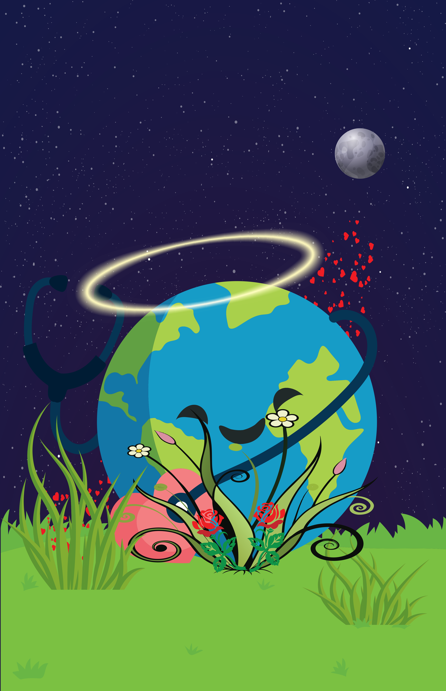
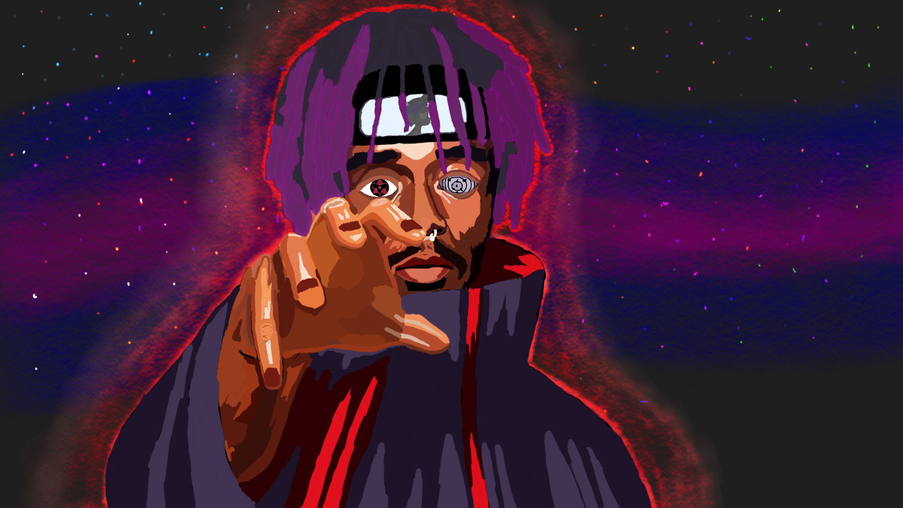
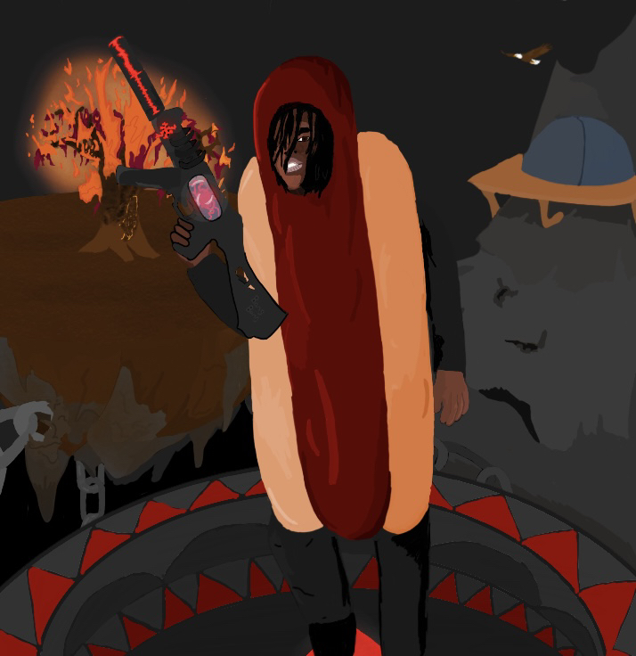

health clinic poster 1
This was a poster I was working on for a health clinic, I was trying to make it look like a fun and inviting place to go to. I think I did a pretty good job on it.
health clinic poster 2
this was my second design for my health clinic poster, i wanted like a nice warm peaceful approach when people would come into the clinic. I think i did a decent job at that.
lil uzi Vert
Lil uzi vert is like one of my favorite artist probably in my top three only below King Von and young thug. But Like i dont even know how many years at this poing its been but i saw a picture on twitter i dont even remember the picture anymore but it looke dsimilar to my drawing because i saw the picture and was like that would be nice if i drew that and i did.
chief keef hot dog
chief keef is in my top 5 favorite artists and i decided hey look at the picture of chief keef, let me try and draw that but with him wearing a hotdog costume because why not it will be hilarious.